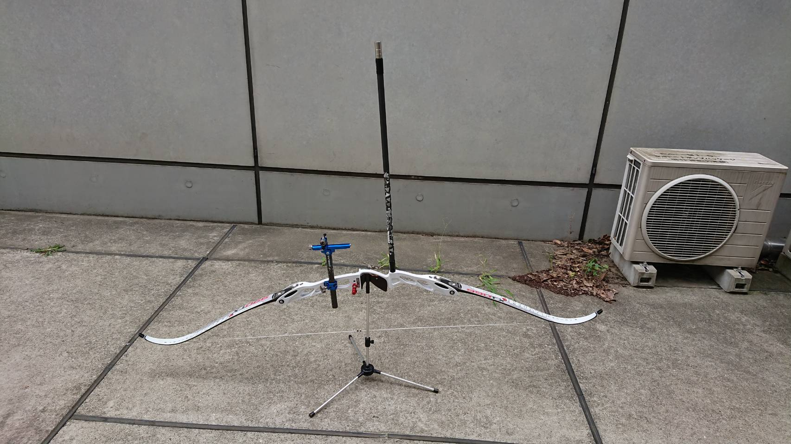
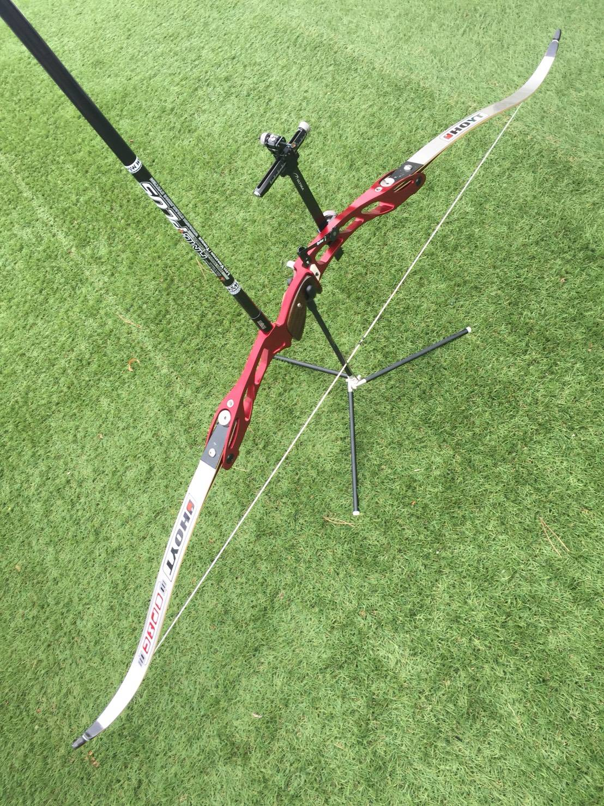
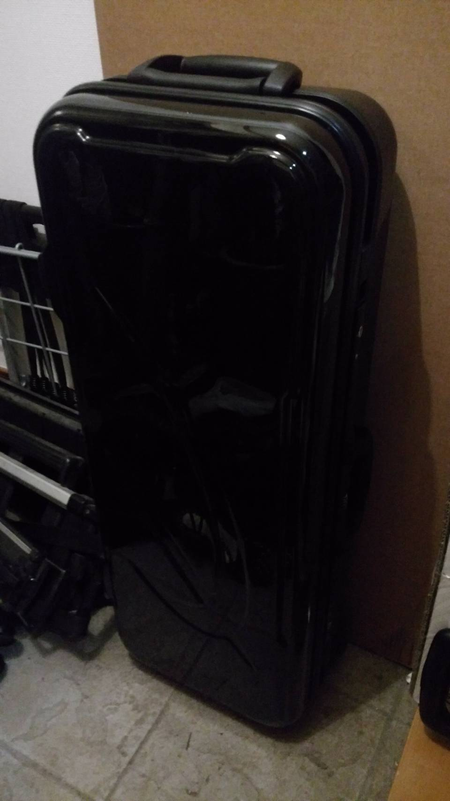
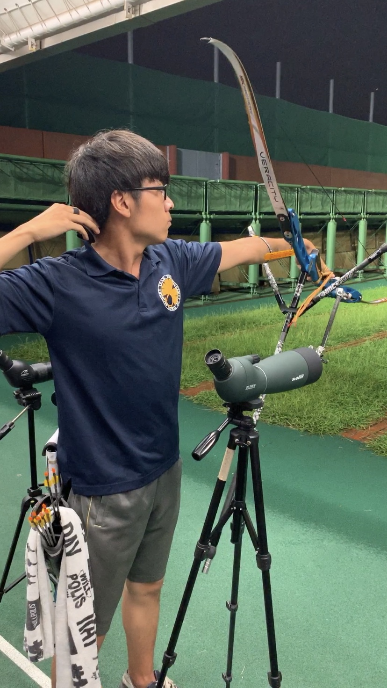
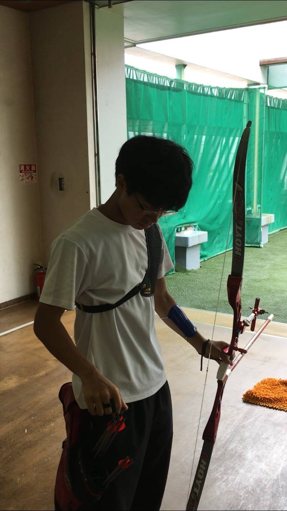
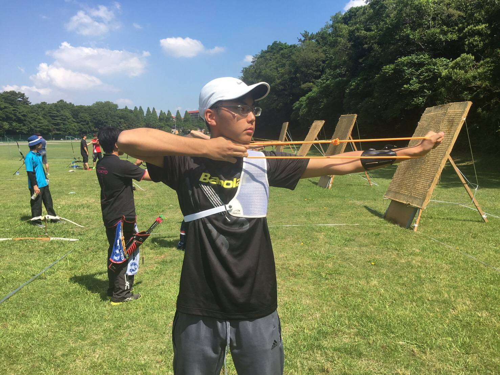
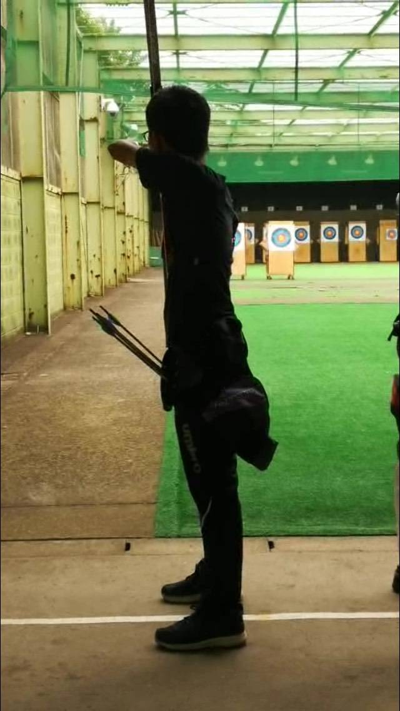
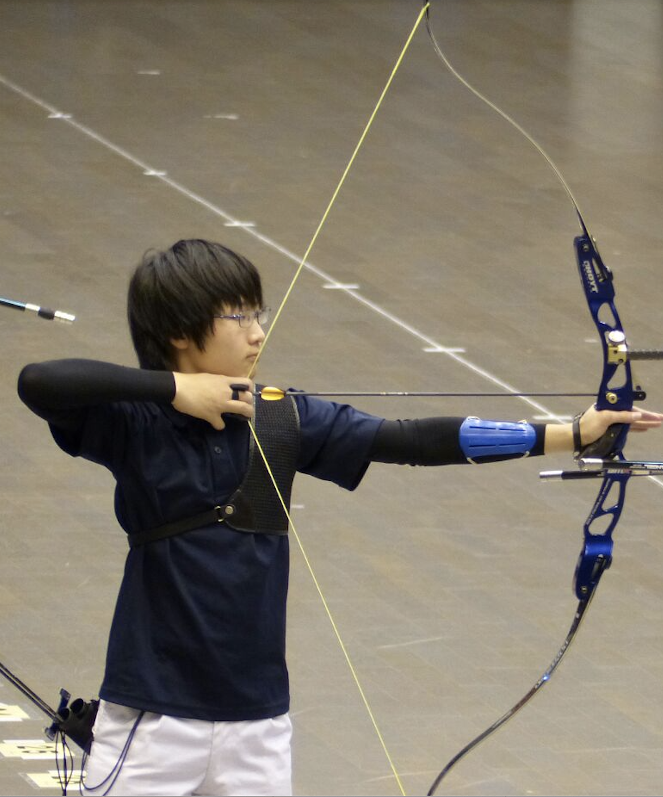

48期(2018年入部)

web責・常務加藤 雅己
所属：工学部計数工学科
出身：大阪府・東大寺学園高校
悠々自適に

副務・女子リーダー木下 青
所属：農学部 動物生命システム科学専修
出身：埼玉県・淑徳与野高校
よろしくお願いします

財務小石 知明
所属：工学部 電気電子工学科
出身：千葉県・開成高校
頑張ります

外主務三枝 大生
所属：工学部 機械工学科
出身：東京都・都立国立高校
いかにMK Zくんの足手纏いにならないように射つか

国公立委員塩入 優
所属：工学部 化学システム工学科
出身：長野県・松本深志高校
上手くなりたい

六大委員高木 優作
所属：工学部 電気電子工学科
出身：東京都・開成高校
いい点数出したい

六大委員林 晃大
所属：工学部 機械工学科
出身：東京都・都立西高校
アーチェリー意外と楽しいですよ

内主務吉川 諒
所属：工学部 電気電子工学科
出身：東京都・麻布高校
HPの新デザインを作りました。弓を片付けるのが結構速いです。

主将渡邊 諒
所属：工学部 機械情報工学科
出身：千葉県・県立船橋高校
射場をください